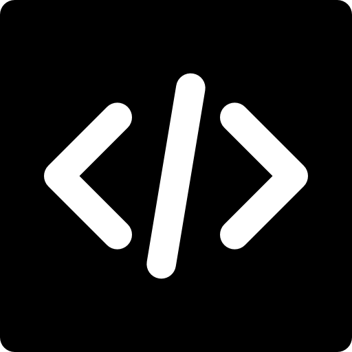
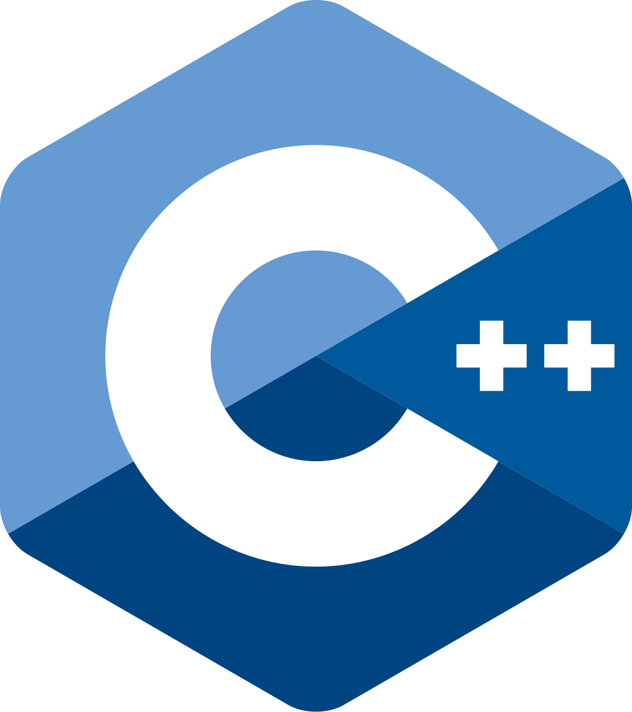
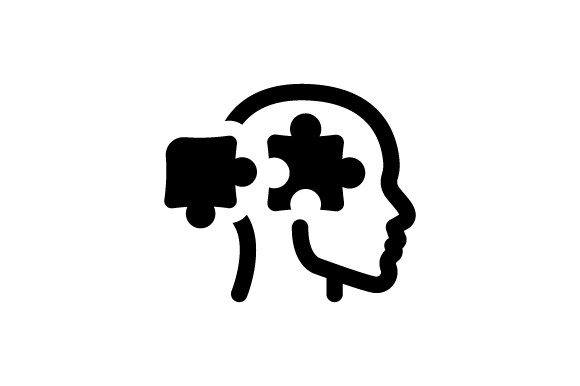
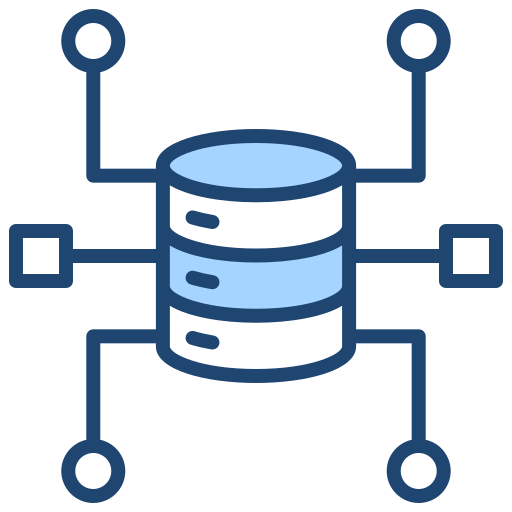
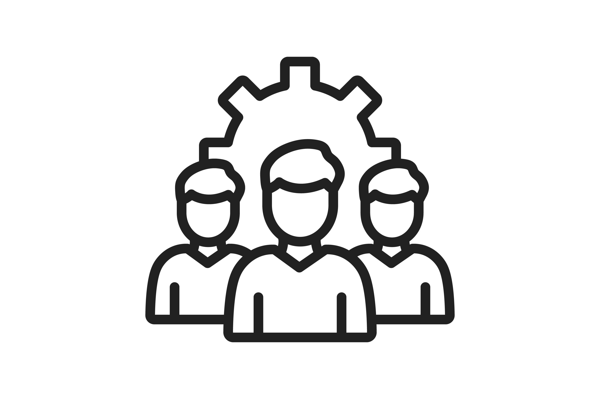
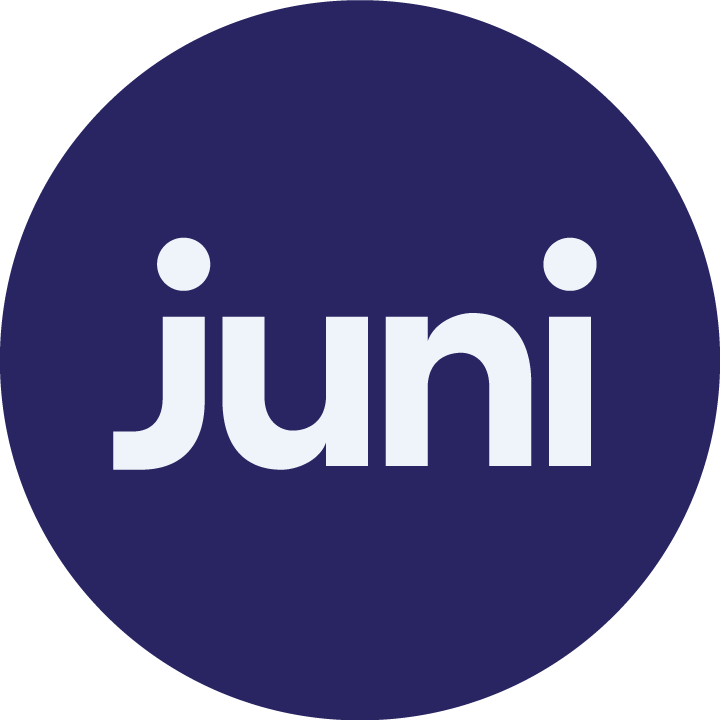
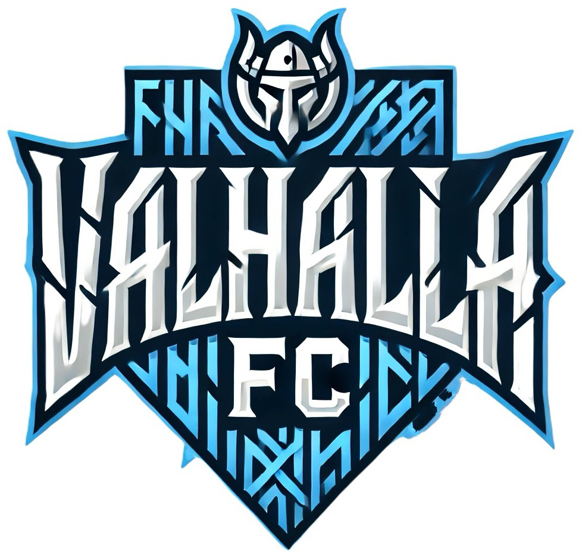

My Skills

Programming JavaScript (React, Node.js)
JavaScript (React, Node.js) HTML5 (CSS, Tailwind)
HTML5 (CSS, Tailwind) Java (JUNIT, )
Java (JUNIT, ) Python (Pandas, ML, NumPy)
Python (Pandas, ML, NumPy)
C++ (C, GDB,Valgrind)
Software Infrastructure
 Git (GitHub, CI/CD Pipeline)
Git (GitHub, CI/CD Pipeline)Cloud (AWS, Docker, Kubernetes )
 Database Management (SQL, pgAdmin)
Database Management (SQL, pgAdmin)

Problem Solving
Data Structures & Algorithms Coding Challenges (LeetCode, HackerRank)
Coding Challenges (LeetCode, HackerRank)- Code Efficiency & Debugging

Communication & Team Collaboration
Projects

Happy Birthday Countdown website
I created this project as a fun birthday gift for my girlfriend. It features a music player and a countdown timer that reveals a special video when it reaches her birthday!
Technologies: React
Experience

Computer Science and Math Tutor
Juni Learning
October 2022 - Present
Taught and mentored 15 diverse students in computer science, covering AP CS, Java, Python, JavaScript, and C. Recognized for excellence, selected to teach advanced courses like USACO, demonstrating strong instructional skills and subject mastery.
Skills gained: Communication, Debugging, Teaching

Freelance Software Engineering
Valhalla FC
September 2024 - Present
Develop tools and applications to enhance server growth, streamline moderation, and improve user experience. Valhalla FC is one of the fastest-growing FC Mobile communities, with over 600 active members, striving to become a top server on the platform.
Skills gained: DevOps, Discord API, Testing
About Me
I'm currently a fourth-year Computer Science student at the University of California, San Diego, with a minor in Economics. I am expected to graduate in June 2026. Ever since I was little, I have always loved building things. It started with puzzles, then Legos, then helping my dad with DIY projects around the house, and now, coding and developing software. The reason I want to be a software developer is that I want to create things that people around the world can use. Do I sometimes want to smash my keyboard because of a segmentation fault or a tiny bug that refuses to go away? Absolutely. But the feeling of finally solving a problem and watching my code run successfully is indescribable. It's the challenge, the problem-solving, and the ability to bring ideas to life that keep me going.
One of my strongest traits is my ability to learn and adapt quickly. This skill has helped me countless times throughout my academic career and when debugging seemingly endless issues in my code. My current skill set includes Python, Java, C++, JavaScript, and React, and I am currently expanding my knowledge in cloud computing and DevOps, including AWS, Docker, and Kubernetes. I enjoy continuously learning new technologies and applying them to real-world problems.
When I'm not coding or studying, you can find me playing soccer or working out at the gym. Personally, I love the feeling of a good sweat after a workout—it reminds me of the exhaustion after a 10-12 hour coding session. And just like coding, the post-workout shower feels like a fresh start. My goals for this upcoming year are to dive deeper into cloud computing, gain a better understanding of how large-scale systems work, and most importantly, land a job as a software developer!
Click below to see some courses I've taken and what I'm currently working on!
📚 Courses I've Taken at UCSD
- 🔹 Data Structures & Algorithms
- 🔹 Operating Systems
- 🔹 Design and Analysis of Algorithms
- 🔹 Database Systems
- 🔹 Computer and Network security
- 🔹 Machine Learning
- 🔹 Design Rechniques for Digital Systems
- 🔹 Software Engineering/Advance Software Engineering
- 🔹 Intro to Data Science
🚀 Courses I'm Currently Learning
- 🔹 Intro Distributed Systems (UCSD)
- 🔹 AWS Certified Cloud Practitioner (udemy)
- 🔹 React (udemy)
Socials
I'm always open to new opportunities and challenges, so feel free to contact me for any inquiries or collaborations. I look forward to hearing from you!